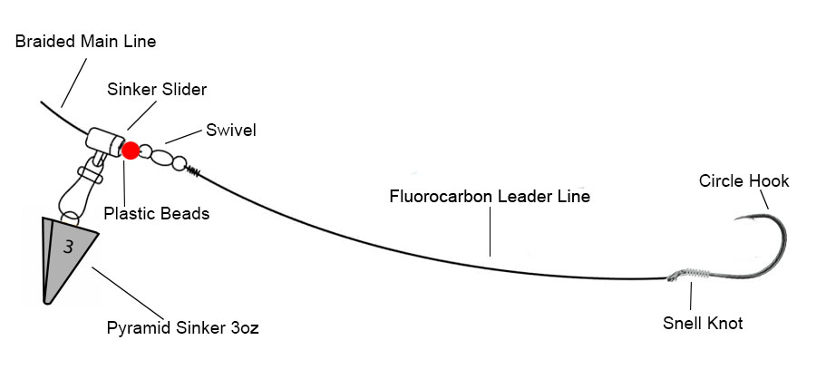
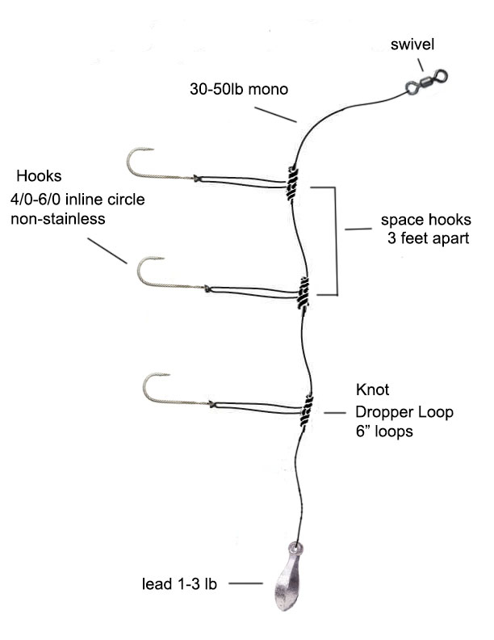
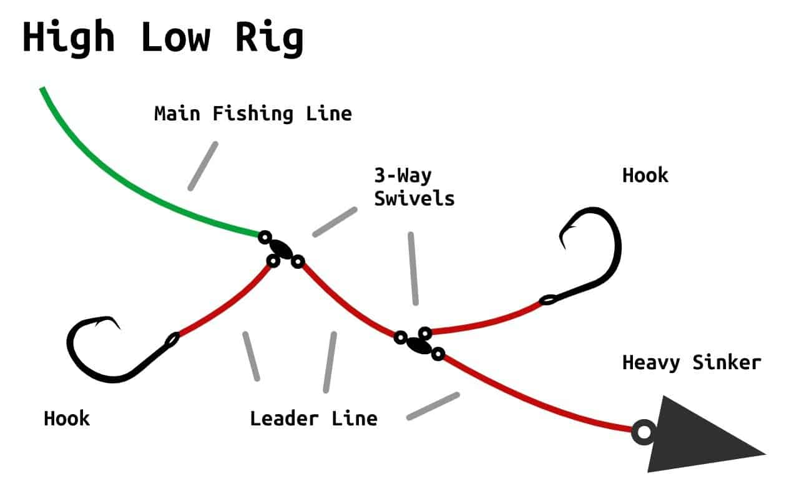

Most anglers own twenty sinker types and use three. The rest sit in a tackle box, rusting. That's fine if you like buying lead. But if you want to catch fish, throw out the bank sinkers and the dipsey divers and everything else you've been talked into buying. You need three rigs. That's it.

The Fish Finder Rig
This is your deep-water setup. Thirty feet or more, strong current, big bait for big fish.
Slide the sinker onto your main line. Then tie a swivel. Then add a leader, two to four feet, ending in your hook. The sinker moves freely on the line. When a fish picks up the bait, it doesn't feel the weight, it just feels the hook.
Use this for catfish on a dropping tide, walleye on the St. Lawrence, or any large bottom feeder in moving water. Use an egg sinker or a cannonball, the shape matters less than the slide.
The most common mistake: using too light a sinker. A fish finder rig only works if the sinker actually stays on the bottom. If your line is angling back toward the bank instead of dropping straight down, go heavier. A heavy sinker on the bottom beats a light sinker floating through empty water every time.

The Dropper Loop Rig
Current is ripping. You're losing rigs every ten minutes. This is your answer.
Tie a dropper loop about eighteen inches above your sinker. Cut one side of the loop, that's where your hook goes. The sinker sits on the bottom holding position, while the bait floats just above the mud and debris.
The dropper loop has a second advantage you don't hear about: when you snag bottom (and you will snag bottom), the hook usually pulls free before the sinker does. The loop acts like a shock absorber. A standard rig with a tied hook just breaks at the knot. With a dropper loop, you get your sinker back half the time. That adds up fast when you're losing a rig every few casts.
- Best for: Strong current, rocky or snaggy bottom, catfish and carp in rivers
- Key tip: Don't be afraid to go heavy, hold the bottom or go home
- Montreal spots: Canal de Lachine narrows, St. Lawrence main channel
The Hi-Low Rig
You want two hooks. You're fishing for anything that swims near the bottom, perch, crappie, catfish, whatever.
Tie a sinker to the bottom of your rig. Then tie two hooks above it, spaced about a foot apart. Use a three-way swivel or pre-tied rigs from a package. The fish don't care how it was assembled.
This rig shines when fish are stacking vertically. A bait at two feet off the bottom gets ignored. A bait at one foot and a bait at three feet catches doubles. It's not exciting, it's just efficient.
Pro tip on bait: Don't put the same thing on both hooks. Worm on top, minnow on bottom. Or a piece of liver on one hook and a piece of cut bait on the other. You're running an experiment every time you drop. Let the fish tell you what they want.

Sinker Shapes Matter Less Than You Think
Bank sinkers roll in current. Pyramids dig in. Round sinkers work fine on flat sand and nowhere else. Learn that and you've learned ninety percent of what there is to know.
The rest is superstition. Fish don't inspect your hardware. They bite or they don't. Focus on getting the bait to the right depth, keeping it there, and using something that moves and smells like food.
What About All the Other Rigs?
The sliding sinker rig is just a fish finder with extra steps. The knocker rig works fine until it doesn't. The three-way swivel rig is a hi-low for people who like tying extra knots.
You don't need fourteen sinker styles. You need three rigs and the sense to know when to use them. Everything else is a distraction. Pick one, learn it well, and go lose some lead on the bottom. That's how you learn.

Montreal's freshwater fishing community, sharing techniques, spots, and stories from the water since 2020.